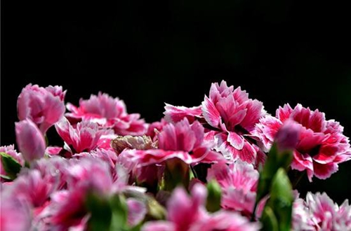

康乃馨烂根怎么办 康乃馨烂根什么原因
每年5月份的第2个星期天，就是母亲节。在这个特殊的日子里，康乃馨也被赋予了特殊的意义。在我看来，康乃馨最是温柔不过，它花色温柔植株雅致，花期于每年5月-8月，果期则在8月-9月，在最温暖的日子里，都有着它的身影。

不少花友，亦是被这样的康乃馨所折服，但是在养护的过程当中，你会发现美丽总是脆弱的，这不，前段时间就有花友询问：“我家的康乃馨烂根了，有什么办法可以救活吗？”
烂根？
俗话说养花三年水，三年水养根。这养花重点都是在养根上面，这根要是出了岔子，整个植株亦是受到极大的伤害。而如果我们在养花过程当中，花草出现了问题，别着急，我们先找准问题的关键，再对症下药。
一般而言，康乃馨烂根都是因为根部环境的湿度过大，造成的细菌感染所导致的腐烂，故而如果自家的康乃馨烂根了，赶紧反思反思，是不是自己浇水太勤奋了呀？当然，还有一种原因是在春夏秋季节，如果遇到了连日的高温多余天气，在这个特殊的环境下，植株就有可能受到真菌的侵扰，根部感染病菌导致腐烂，而这一种植物病，就叫做“灰霉病”！
一旦发现康乃馨烂根，那么此时已经腐烂的根系是回天乏术，我们直接将它烂掉的根系剪掉，再集中处理。在修剪的过程当中，我们可以顺便检查康乃馨的根系，将一些烂根、病根、残根通通修剪掉，再用清水冲洗根系后，再喷洒一些杀菌的药剂后，晾干伤口，重新准备疏松肥沃的土壤和洗干净的花盆，重新准备上盆。
重新上盆之后的康乃馨就像是切除了“病变部位”的病人，此时还十分的虚弱，故而在手术之后，康乃馨不要回到原本的位置养护，而是放在阴凉通风的散光处，尤其是通风和排湿要注意，因为康乃馨之前就是因为长期处于不通风和潮湿的环境当中，才患上了灰霉病的。如果最近的天气温度比较高，但是又连日下雨的话，注意将康乃馨转移到比较干燥明亮的地方进行养护，避免重蹈覆辙。
除了高温和多雨，如果康乃馨生长的盆土出现了板结不透气的情况，同样会对康乃馨的各系造成巨大的影响。故而如果发现康乃馨的盆土透气性变差的话，可以适当的进行换盆换土处理，合适的土壤才会养根！
而在换土的时候，受到之前的土壤影响，在换土的时候我们可以适当的为康乃馨进行修根，剪掉烂根、残根、病根、老根等根系，重新搭配营养无菌、疏松透气的土壤重新栽种，配土的时候可以适当的增加一些颗粒土，提高盆土的透气性和疏松性，例如说珍珠岩和河沙这一类的颗粒土，这样有利于植物根系的生长发育，能够让康乃馨叶子越来越油绿，植株越长越繁盛。